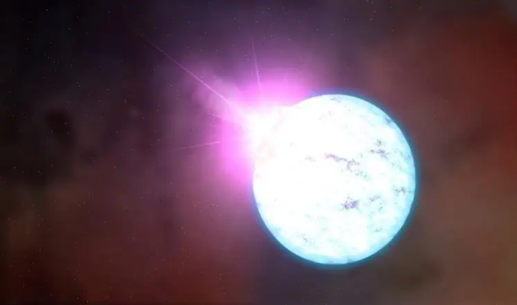
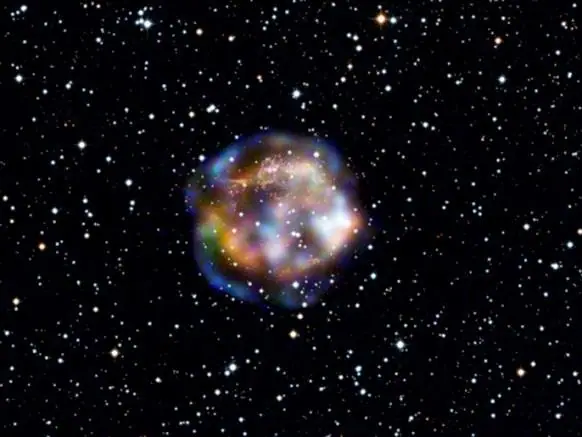

Science news ·
Pulsars: stars that died to live – Hani Al-Dhulaie
Hani Al-Dhulaie on pulsars, the rapidly spinning neutron stars left behind when massive blue-white stars end their short, brilliant lives.
This post is in Arabic; the title and summary above are translated. The original text follows.

رسم توضيحي لنجم نيوتروني (رويترز)
في غياهب الكون، وبين ثنايا النجوم البعيدة، تقبع نجوم لطالما دوت في المجرة بنورها الأبيض والأزرق، عاشت حياة ليست طويلة كثيرا، ربما بضع مئات من ملايين السنين أو أكثر قليلا، بحرارة فاقت العشرين ألف درجة عند سطحها وبضع عشرات الملايين في باطنها، لكنها بعد ذلك العمر لفظت أنفاسها الأخيرة، لا بهدوء كما يموت البشر والكائنات الحية الأخرى، ولكن بدويّ صدّع أرجاء المجرة حينئذ، ولم تهدأ بعد ذلك إلا في الأطراف البعيدة منها: إنها النجوم النيوترونية النابضة.
تعيش النجوم أكثر من 90% من عمرها مستقرة تحرق وقودها الهيدروجيني وتحوله إلى هيليوم، وفي الجزء المتبقي من حياتها تتضخم فتصبح نجوما عمالقة تحرق الكبيرة منها الوقود بتحويله إلى عناصر أثقل فأثقل إلى أن تصل عنصر الحديد، العنصر الأكثر استقرارا في الطبيعة، فلا يعود النجم قادرا على دمج أنوية هذا العنصر، فينهار على نفسه مسببا انفجارا مروعا لا يشبه أي نوع من الانفجارات التي نعرفها على الأرض.
إنه انفجار المستعر الأعظم المعروف بـ”السوبر نوفا”، وفيه تتشظى مادة النجم أشلاء تملأ الكون نورا يفوق بشدته نور كل المجرة مئة مرة، وبه لا يستمر الحديد حائلا في وجه تشكل العناصر الثقيلة، بل تتشكل نوى ذرات الرصاص واليورانيوم والثوريوم وكل العناصر الأثقل من الحديد، وكلها تتطاير مع هذا السديم المنفلت عن النجم منتثرة في السماء على شكل غيمة كبيرة لا تفتأ تتمدد حتى بعد أن يخبو نورها الذي ظهر كنجم جديد زائر في السماء، لم يكن يظهر في خريطة النجوم من قبل.
ومن أشهر انفجارات السوبرنوفا هذه ذلك الانفجار الذي رصد في عام 1006 للميلاد جنوب برج الميزان وسجلته كتب التاريخ العربية في اليمن ومصر، وانفجار آخر شوهد في عام 1054 للميلاد وعرف بنجم الصين الزائر في برج السرطان وذكرته التسجيلات العربية كذلك، ثم حديثا في عام 1987 انفجر نجم في سحابة ماجلان التي هي قمر يدور حول مجرتنا درب التبانة، ومؤخرا انفجر نجمان في عامي 2015 و2016 في برج القوس، وبين هذا وذاك سجل ظهور نجوم جديدة عدة، لكنها ظهرت خافتة على أطراف المجرة البعيدة.
|  |
| صورة تظهر بقايا انفجار سوبرنوفا (الفرنسية) |
بقايا النجوم
ويتولد عن مثل هذه “السوبرنوفات” أحد شكلين من بقايا النجوم، فإذا كانت كتلة النجم أكثر من ثلاثة أضعاف كتلة الشمس قبل الانفجار، فإن الناتج هو ثقب أسود. ولا تعرف قوانين الفيزياء والطبيعة وصفا دقيقا لهذا الشيء سوى أنه منطقة ميتة في الفضاء الزمكاني تغيب فيه كل أشكال القوانين الفيزيائية، فإذا اقترب منه أي ضوء فإنه لا يفلت من قبضته، بل يهوي فيه إلى الأبد دون رجعة، ولذلك سمي ثقبا، ولأنه لا يعيد إشعاع أي نوع من الضوء، فقد وصف باللون الأسود.
أما إن كانت كتلة النجم قبل الانفجار أقل من ثلاث كتل شمسية وأكثر من كتلة الشمس بمرة ونصف المرة، فإن الناتج الجديد هو النجم النيوتروني، وأحيانا يكون نابضا.
فأما كلمة نيوتروني فمأخوذة من النيوترونات، وهي الجسيمات المتعادلة داخل نواة الذرة. فمن المعلوم أن الذرة مكونة من نواة تحتوي على بروتونات موجبة الشحنة ونيوترونات متعادلة، وحول هذه النواة وعلى مسافة بعيدة منها تدور جسيمات سالبة الشحنة تدعى الإلكترونات.
ولأن النجم قبيل أن ينفجر على شكل سوبرنوفا يأخذ بالانهيار على نفسه بسبب الضغط الهائل على باطنه ودرجة الحرارة المرتفعة التي تبلغ مئات المليارات، فإن الإلكترونات لا تعود قادرة على الدوران في مداراتها، بل إن الضغط عليها يجبرها أن تندمج مع البروتونات الموجبة داخل الأنوية فتتعادل معها في الشحنة لتصبح جميع مكونات الأنوية نيوترونات متعادلة فقط، ومنها أخذ هذا النجم اسمه.
ولأن المسافات الشاسعة بين الإلكترونات وأنوية الذرات قد اختزلت إلى الصفر، فإن المادة تنكمش إلى حجم ضئيل جدا ذي كثافة عالية جدا. وحتى نتصور الأمر، فإن كتلة ملعقة شاي صغيرة (أي 5 سنتيمترات مكعبة) من مادة النجم النيوتروني هذا ستعادل مئة مليون طن، وهو رقم يفوق الخيال، لكنه محسوب علميا ورياضيا. ولو تصورنا أن شمسنا ستموت على شكل نجم نيوتروني، فإن قطرها الحالي البالغ 1.4 مليون كيلومتر سيصبح عشرين كيلومترا فقط!
ولكن، هل مات النجم النيوتروني حقا، أم لا تزال فيه بعض حياة؟ في عام 1967 استطاعت الطالبة جوسلين بل التقاط أول إشارة غريبة قادمة من الفضاء عبر تلسكوب راديوي مكون من شبكة من الأسلاك، أثناء تحضيرها لشهادة الدكتوراه في جامعة كامبردج.
| تظل ألغاز الكون أكثر وأكبر من أن تحصيها علوم البشر ومراصد الفلكيين (رويترز) |
لغز
وشكل هذا الكشف أول لغز حقيقي مع الفضاء، فاعتقد العلماء بأنهم اتصلوا بالأقزام الخضر، وأن ثمة حضارات كونية تحاول التواصل مع الأرض، غير أن هذه الإشارات قد كثرت مصادرها، ولم يكن لها تفسير سوى أنها نوع من النجوم الغريبة، خاصة أن بعضها كان يرسل أشعة سينية قوية على شكل نبضات في فترات زمنية قصيرة جدا أكثرها لا يتجاوز الثانية الواحدة، بل إن بعضها يرسل ثلاثين نبضة في ثانية واحدة.
ومع تطور التقنيات الرصدية وأدواتها، وضع العلماء التفسير الأمثل لهذه الأجرام بأنها نجوم نيوترونية شديدة الكثافة سريعة الدوران تواجه الأرض من قطبها المغناطيسي الذي تدور حوله الموجات الكهرومغناطيسية، فتنطلق منه على شكل دفقات كلما توجه نحو الأرض. فهي إذن نجوم ميتة لكنها في الوقت ذاته حية بنبضاتها هذه.
ولأن النابضات -أو النجوم النيوترونية- أجرام خافية لا ظاهرة، فإن إطلاق القول بكنهها غير متحقق حتى اليوم، تماما كحال الثقوب السوداء التي لا تزال فرضيات تفسيرها بحاجة إلى براهين رصدية أكثر فأكثر، رغم قبولها الكبير نسبيا في أواسط المجتمع العلمي.
وتظل ألغاز الكون أكثر وأكبر من أن تحصيها علوم البشر ومراصد الفلكيين، فالأرض لم تبلغ بعد حجم ذرة مع سعة هذا الكون، بل الكون المرئي جميعا لا يمثل سوى 6% من أصل المادة والطاقة في الكون، فجُلّها طاقة ومادة مظلمة يعول الفلكيون على اكتشافهما الكثير الكثير في حل أهم الألغاز الكونية، وفي مقدمتها الانفجار العظيم الذي به بدأ هذا الكون وجوده.